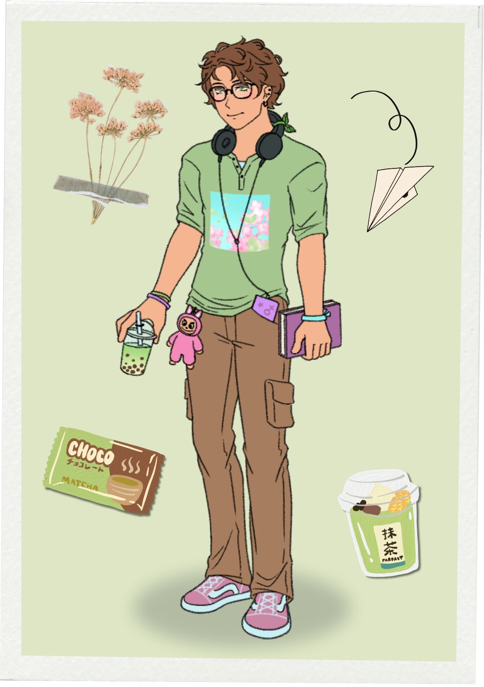
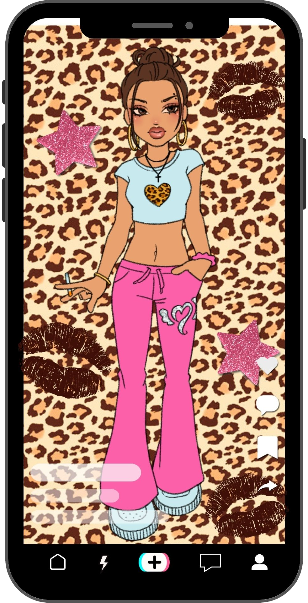
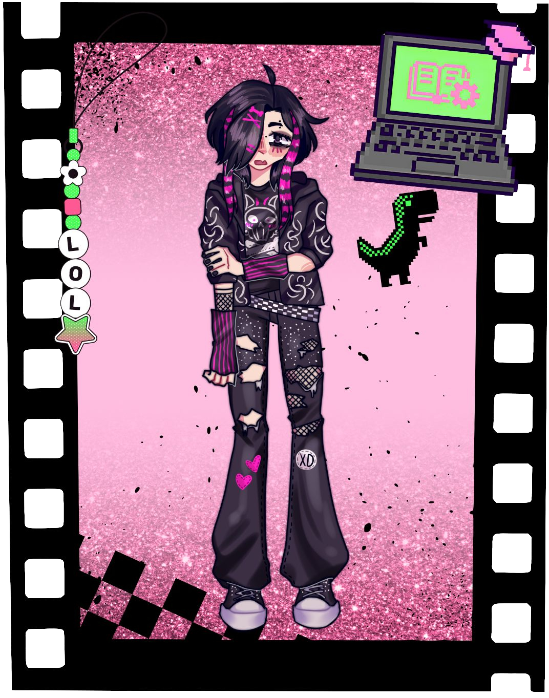
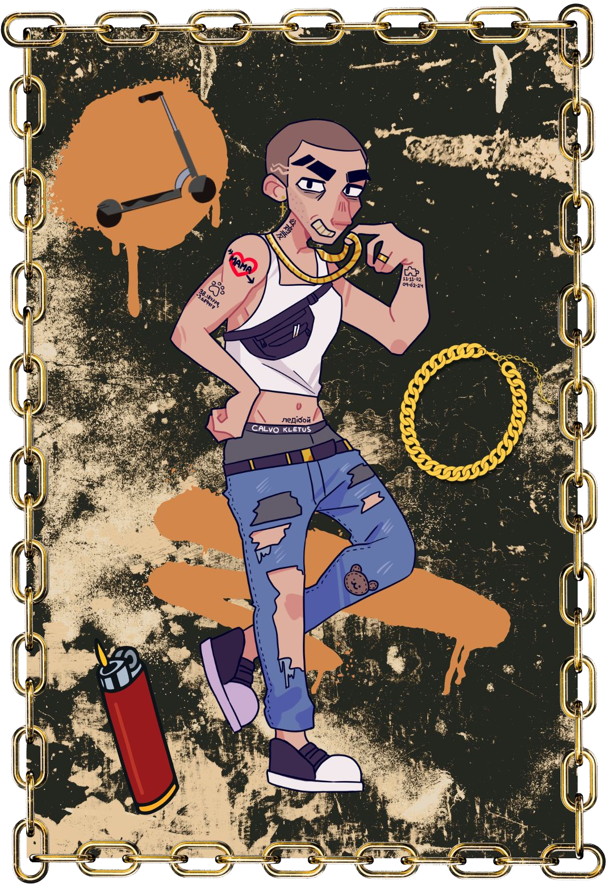
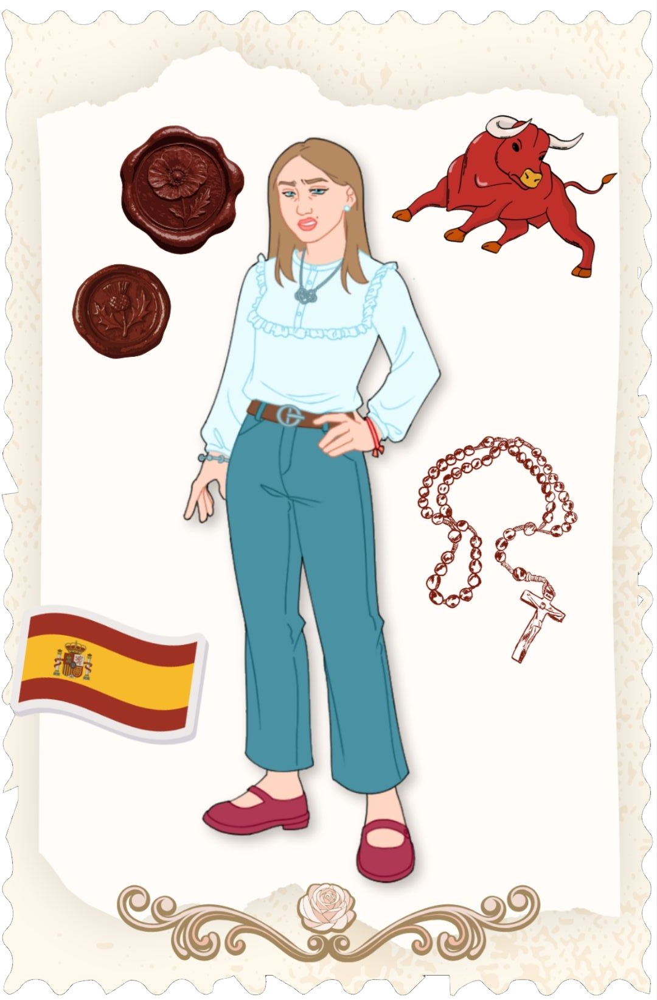
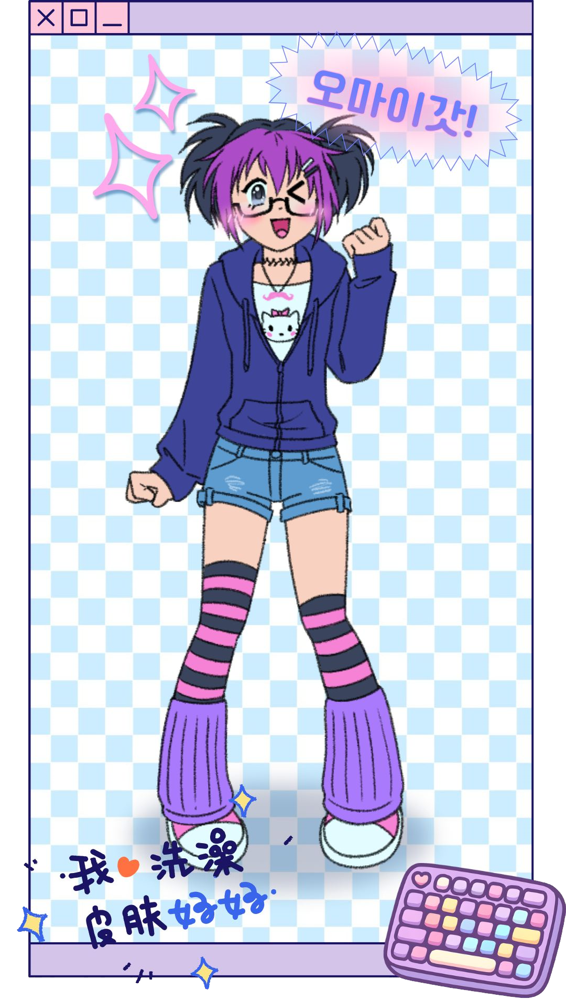
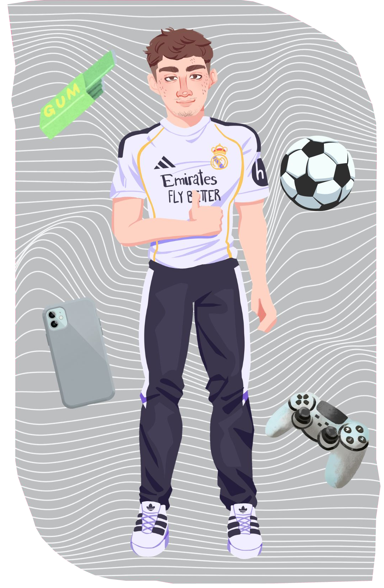
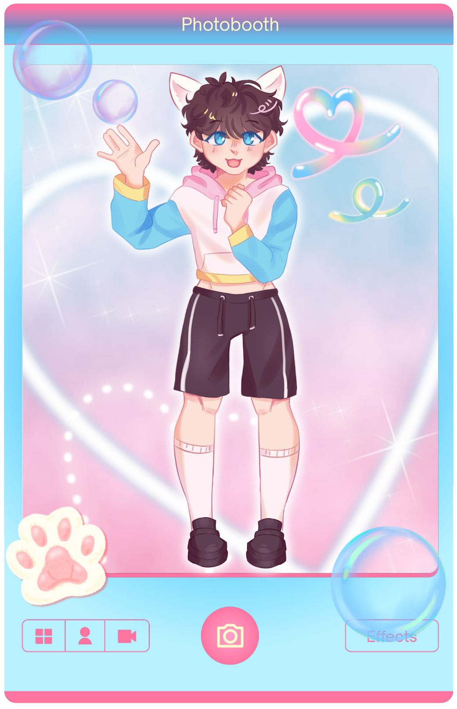
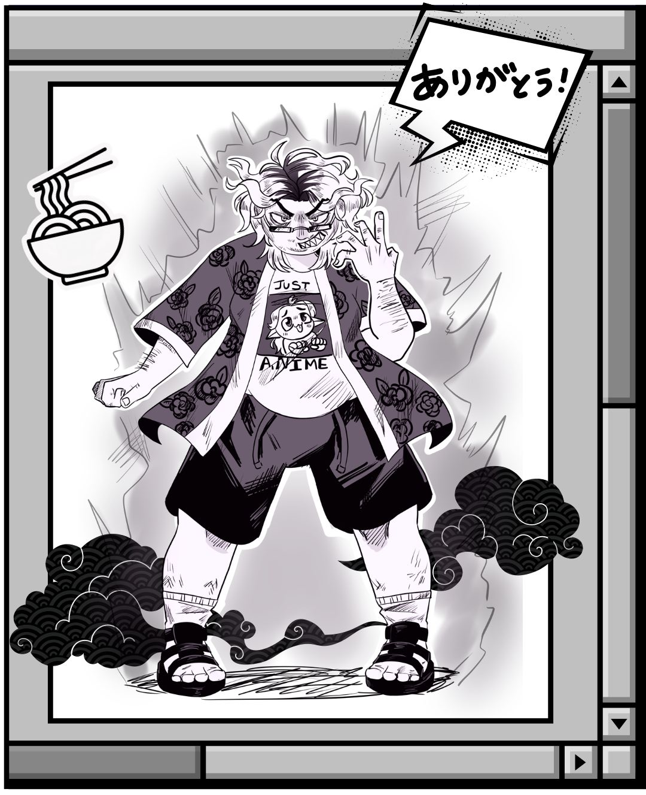

Aquí verás los distintos personajes romanceables.
Aquí verás los distintos personajes romanceables.

Noah de la Torre Guzmán
Género: Masculino
Cumpleaños: 08/12/2007
Estatura: 1,90m
Rol: Ruta romanceable
Rama de bachillerato: Humanidades (de historia del arte)
Le gusta: Hablar de feminismo, beber matcha, ir a manifestaciones, leer, escuchar música de Lana del Rey y Taylor Swift
Odia: Los fifes, los cólicos, Morad, la misoginia, la guerra
Rebeca “La Rebe” Blanco Juárez
Género: Femenino
Cumpleaños: 27/11/2006
Estatura: 1.69m
Rol: Ruta romanceable
Rama de bachillerato: Bachillerato general
Le gusta: llevar pendientes de aros, fumar vaper, el estampado de leopardo, hacerse las uñas, masticar chicle en clase
Odia: que la molesten, los colores pastel, que se gaste su vaper, música en inglés, ir a clase temprano


Dolores Espinosa Espadas
Género: No binario
Cumpleaños: 29/9/2007
Estatura: 1,59m
Rol: Ruta romanceable
Rama de bachillerato: Ciencias tecnológicas
Le gusta: El gore, estar sole, terror, el dolor (masoquismo), llorar
Odia: La felicidad, la sociedad, a los “normies”, todo color que no sea negro, rosa o rojo, la vida
Jonathan “El Johnny” García Gil
Género: Masculino
Cumpleaños: 23/3/2007
Estatura: 1.76m
Rol: Ruta romanceable
Rama de bachillerato: Humanidades(de economía)
Le gusta: Fumar , ir en patinete eléctrico, escuchar música de Morad, las batallas de gallos, robar
Odia: Ir a clase, que le lleven la contraria, perder el mechero, a majadahonda, que le traicionen


Cayetana Falcó De la Vega
Género: Femenino
Cumpleaños: 18/5/2007
Estatura: 1,61m
Rol: Ruta romanceable
Rama de bachillerato: Ciencias de la salud
Le gusta: Hakuna, Paco de Lucía, irse de viaje, hípica, joyería de oro
Odia: los pobres, que le toquen el pelo, ropa de segunda mano, transporte público, la gente de izquierdas
Soraya "Sayori" Jiménez Cerezo "Sakura"
Género: Femenino
Cumpleaños: 7/4/2007
Estatura: 1.54m
Rol: Ruta romanceable
Rama de bachillerato: Ciencias tecnológicas
Le gusta: Su cartón de Jinu, el K-pop, el anime, dibujar, escribir historias donde ella es T/N
Odia: Que critiquen a su personaje favorito, que critiquen el K-pop, los cosplays caros, los hombres reales, todo lo que no sea un manga/manhua/manhwa


Mario Sánchez Sánchez
Género: Masculino
Cumpleaños: 6/7/2007
Estatura: 1,70m
Rol: Ruta romanceable
Rama de bachillerato: Ciencias de la salud
Le gusta: Decir “bro”, hacer tik toks bailando, el gimnasio, el Real Madrid, jugar al FIFA
Odia: las mujeres, el Barça, las clases, cualquier peinado que no lleve degradado, las minorías
Pablo Romero Gato
Género: Masculino
Cumpleaños: 2/4/2007
Estatura: 1.65m
Rol: Ruta romanceable
Rama de bachillerato: Artes
Le gusta: Vestimenta femenina, hacer bailes “kawaiis”, aplaudir con sus manoplas, hacer de sirviente, maquillarse
Odia: Los low taper fade, a Ricky Edit, que asuman su orientación sexual, estar solo, al Xokas


Luis Vargas Díaz
Género: Masculino
Cumpleaños: 22/5/2007
Estatura: 1,76m
Rol: Ruta romanceable
Rama de bachillerato: Ciencias tecnológicas
Le gusta: Su waifu del character.ai, la informática, Reddit, el LoL, bebidas energéticas
Odia: Asearse, salir a la calle, dormir, recoger su habitación, la gente